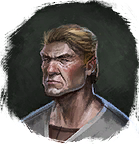

Веревка с крюком
Предметы / Ключи
Открыть в интерактивной вики →
| Вес | 0 |
|---|
Описание
Необходима, чтобы подняться по строительным лесам к гнезду  Ястреб.
Ястреб.
Получить можно бесплатно 25x один раз в день у
Этот предмет нельзя продать.
Ястреб. Получить можно бесплатно 25x один раз в день у

ИнженерЭтот предмет нельзя продать.